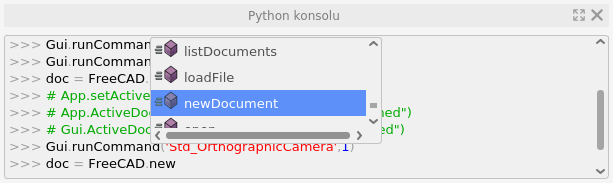

Python Komut Dosyası Oluşturma (Scripting) Eğitimi
Python kullanımı ve öğrenilmesi çok kolay bir programlama dilidir. Açık kaynak kodlu, çok platformlu ve basit kabuk komut dosyalarının programlanmasından, çok karmaşık programlara kadar pek çok şey için tek başına kullanılabilir. Ancak en yaygın kullanım yönteminden biri, diğer uygulamalara gömülerek kullanılmasıdır. FreeCAD içinde tam olarak böyle kullanılır. Python konsolundan veya özel komut dosyalarınızdan FreeCAD'e kılavuzluk yapabilir ve grafik kullanıcı arabirimi aracı olmayan çok karmaşık eylemler gerçekleştirmesini sağlayabilirsiniz. Örneğin, bir python betiğinden (script) şunları yapabilirsiniz:
- Yeni nesneler oluşturabilirsiniz,
- Mevcut nesneleri değiştirebilirsiniz,
- Nesnelerin 3B görünümünü değiştirebilirsiniz,
- FreeCAD arayüzünü değiştirebilirsiniz.
FreeCAD'de Python'u kullanmanın birkaç farklı yolu vardır:
- Komut satırı tarzı bir arayüzde komutlar verebileceğiniz FreeCAD'in Python Yorumlayıcısından.
- Eksik bir aracı FreeCAD arayüzüne hızlı bir şekilde eklemenin uygun bir yolu olan makrolardan.
- Oldukça karmaşık çözümler oluşturmak için kullanılabilen harici komut dosyalarından, hatta tüm Çalışma Tezgahlarından (WorkBench'lerden).
Bu eğitimde, başlamanıza yardımcı olacak birkaç temel örnek üzerinde çalışacağız, ancak orijinal Wiki sayfasında Python komut dosyası oluşturma hakkında çok daha fazla belge / bilgi bulunmaktadır. Python'da tamamen yeniyseniz ve Python'un nasıl çalıştığını anlamak istiyorsanız, temel Python'a Giriş eğitimimiz de var.
Python komut dosyası oluşturmaya devam etmeden önce Düzenle → Seçenekler → Genel → Çıktı penceresine gidin ve aşağıda açıklaması bulunan iki seçeneği işaretleyin / aktifleştirin :
- Dahili Python çıktısını rapor görünümüne yönlendirin. (Redirect internal Python output to report view.)
- Dahili Python hatalarını rapor görünümüne yönlendirin. (Redirect internal Python errors to report view.)
Ardından Görünüm → Paneller'e gidin ve şunları kontrol edin:
- Rapor görünümü (Report view)
Python kodu yazma
FreeCAD'de Python kodu yazmanın iki yolu vardır. Python konsolunda (menüden Görünüm → Paneller → Python konsolu'nu seçin) veya Makro düzenleyicide (menüden Makro → Makrolar...'ı seçin). Konsolda Python komutlarını birer birer yazar, Enter'a basarak çalıştırırsınız (yürütürsünüz), makrolar ise yalnızca makro çalıştırıldığında yürütülen birkaç satırdan oluşan daha karmaşık kodlar içerebilir.

FreeCAD Python konsolu
Her iki yöntemi de kullanabilirsiniz. Her satırı kopyalayıp Python konsoluna yapıştırır ve ardından Enter tuşuna basabilir veya kodun tamamını yeni bir Makro penceresine kopyalayıp yapıştırabilirsiniz.
FreeCAD'i Keşfetmek
Yeni boş bir belge oluşturarak kod yazmaya başlayalım:
doc = FreeCAD.newDocument()FreeCAD Python konsoluna FreeCAD. yazdığınız anda FreeCAD bunu fark edecektir. Satırın (kodun) geri kalanını hızlı bir şekilde otomatik tamamlamanıza izin veren bir pencere açılır. Daha da iyisi, otomatik tamamlama listesindeki her girişin ne yaptığını açıklayan bir ipucu vardır. Bu, mevcut işlevselliği keşfetmeyi kolaylaştırır. newDocument'ı seçmeden önce diğer seçeneklere bir göz atın.

FreeCAD Python konsolunun otomatik tamamlama mekanizması
Şimdi (bu kodu yazdıktan sonra) yeni belgemiz FreeCAD tarafından oluşturulacak. Bu, araç çubuğundaki Std New (Yeni) düğmesine basmaya benzer. Aslında FreeCAD'deki çoğu düğme, bir veya daha fazla Python kodu satırını çalıştırmaktan başka bir şey yapmaz. Daha da iyisi, python konsolunda betik (script) dosyası komutlarını göstermek için Düzenle → Seçenekler → Genel → Makro bölümünden Betik komutlarını python konsolunda göster seçeneği ile ayarlayabilirsiniz. Bu, düğmelere bastığınızda çalıştırılan tüm Python kodunu, konsolda yazdıracaktır. Bu yöntem, Python'da eylemlerin nasıl üretileceğini öğrenmek için çok kullanışlıdır.
Şimdi belgemize geri dönelim ve onunla neler yapabileceğimize bakalım:
doc. Mevcut seçenekleri keşfedin. Genellikle büyük harfle başlayan isimler niteliklerdir, bir değer içerirler, küçük harfle başlayan isimler ise fonksiyondur (yöntem olarak da adlandırılır), "bir şey yaparlar". Alt çizgi ile başlayan isimler genellikle modülün dahili çalışması için vardır ve bunları önemsememelisiniz. Belgemize yeni bir nesne eklemek için yöntemlerden birini kullanalım:
box = doc.addObject("Part::Box", "myBox")Kod yazılıp Enter tuşuna basılmasına rağmen hiçbir şey olmadığını göreceksiniz. Bunun sebebini açıklamak gerekirse; FreeCAD birbirine bağlı yüzlerce karmaşık nesneyle çalışabilir, bir yerde küçük bir değişiklik yapmak büyük bir etki oluşturabilir; bu da, uzun zaman alabilecek tüm belgeyi yeniden hesaplamanız anlamına gelir. Bu nedenle neredeyse hiçbir komut sahneyi otomatik olarak güncellemez. Güncellemeyi el ile (komut yazarak) yapmak gerekir:
doc.recompute()Şimdi (güncelleme komutunu çalıştırınca), sahneye eklediğimiz kutu görünür hale geldi. FreeCAD'de sahneye nesne ekleyen düğmelerin çoğu aslında iki şey yapar: nesneyi ekler ve yeniden hesaplar. Yukarıda bahsedildiği gibi Betik komutlarını python konsolunda göster (Show script commands in python console) seçeneğini açtıysanız, GUI düğmesiyle (araç çubuğunda bulunan düğmesini kullanara) sahneye bir küre eklemeyi deneyin; Python kodunun iki satırının birbiri ardına çalıştırıldığını göreceksiniz.
 Nesne eklendi ve yeniden hesaplandı (Güncellendi)
Nesne eklendi ve yeniden hesaplandı (Güncellendi)
Şimdi kutumuzun içeriğini inceleyelim:
box.Hemen aşağıdakiler gibi birkaç ilginç şey göreceksiniz:
box.HeightBu, kutumuzun mevcut yüksekliğini yazdıracaktır. Şimdi bunu değiştirmeye çalışalım:
box.Height = 5Kutunuzu fare ile seçerseniz, Özellik Düzenleyicide, Veri (Data) sekmesinde Yükseklik (Height) özelliğimizin göründüğünü göreceksiniz (ayrıca Görünüm (View) sekmesindeki özelliklerle alakalı, daha sonra bilgi verilecektir). Orada görünen bir FreeCAD nesnesinin tüm özelliklerine, Veri (Data) Height özelliğinde yaptığımız gibi, adlarıyla Python ile de doğrudan erişilebilir. Kutunun diğer boyutlarını değiştirmeyi deneyin.

Vektörler ve yerleşimler
Vektör, herhangi bir 3B (3D) uygulamada çok temel bir kavramdır. Bir vektör, 3B uzayında bir noktayı veya konumu tanımlayan 3 sayıdan (x, y ve z) oluşan bir listedir. Vektörlerle toplamalar, çıkarmalar, projeksiyonlar ve çok daha fazlası birçok şey yapılabilir. FreeCAD'de vektörler şu şekilde çalışır:
myvec = FreeCAD.Vector(2, 0, 0)
myvec.x
myvec.y
othervec = FreeCAD.Vector(0, 3, 0)
sumvec = myvec.add(othervec)FreeCAD nesnelerinin diğer bir ortak özelliği de yerleşimleridir (placement). Her nesnenin, bir Data Base (Konum - position) ve Data Rotation (Oryantasyon, dönüş açısı) bilgilerini içeren bir Data Placement (Veri Yerleşim) özelliği vardır.

Placement (Yerleşim) özelliğini kullanarak nesnemizi hareket ettirmek kolaydır:
box.Placement # Kutunun Konum ve Oryantasyon bilgilerini verir
box.Placement.Base # Kutunun Vektörel Konum Bilgisini verir
box.Placement.Base = sumvec # Kutunun Vektörel Konum Bilgisini, sumvec vektörü ile değiştirir
otherpla = FreeCAD.Placement() # FreeCAD orijin bilgisini “otherpla”a ata
box.Placement = otherpla # Kutunun konum/açı bilgilerini, FreeCAD orijin bilgileri ile eşle/ataŞimdi daha ileri gitmeden önce birkaç önemli kavramı anlamalıyız.
Uygulama ve Grafiksel Kullanıcı Arayüzü (App and Gui)
FreeCAD, bir komut satırı uygulaması olarak kullanıcı arayüzü olmadan da kullanılabilecek şekilde tasarlanmıştır. Bu nedenle FreeCAD'deki hemen hemen her nesne iki bölümden oluşur: Nesnenin "geometri" bileşeni ifade eden Object (Nesne), ve "görsel" bileşeni ifede eden ViewObject (NesneGörünümü). FreeCAD'i, komut satırı modunda çalıştığınızda, geometri kısmı mevcuttur, ancak görsel kısım devre dışı bırakılır.
Konsepti açıklamak için küp (box) nesnemize bakalım. Küpün boyutları, konumu ,... vb. geometrik özellikleri Nesne'de (Object) saklanır. Rengi, çizgi kalınlığı ,... vb. görsel özellikleri ise NesneGörünümü’nde (ViewObject)'de saklanır. Bu, Özellik düzenleyicisindeki Veri (Data) ve Görünüm (View) sekmelerine karşılık gelir. Bir unsurun görünüm nesnesine şu şekilde erişilir:
vo = box.ViewObjectArtık Görünüm sekmesindeki özellikleri de değiştirebilirsiniz:
vo.Transparency = 80
vo.hide()
vo.show()FreeCAD'i başlattığınızda, Python konsolu zaten iki temel modül yükler: FreeCAD ve FreeCADGui (App ve Gui kısayolları ile de erişilebilir). Bu modüller belgeler ve nesnelerle çalışmak için her türlü genel işlevi içerir. Konseptimizi göstermek için, hem FreeCAD hem de FreeCADGui'nin şu anda açık olan belge bir ActiveDocument özniteliği içerdiğine bakın. Ancak FreeCAD.ActiveDocument ve FreeCADGui.ActiveDocument aynı nesne değildir. Bunlar bir FreeCAD belgesinin iki bileşenidir ve farklı nitelikler ve yöntemler içerirler. Örneğin, FreeCADGui.ActiveDocument, şu anda açık olan 3B görünüm olan ActiveView'i içerir.
Modüller
FreeCAD'in gerçek gücü, ilgili çalışma tezgahlarıyla birlikte sadık modüllerinde yatmaktadır. FreeCAD temel uygulaması aşağı yukarı boş bir kaptır/kutudur. Modülleri olmadan yeni, boş belgeler oluşturmaktan biraz daha fazlasını yapabilir. Her modül, arayüze yalnızca yeni çalışma tezgahları eklemekle kalmaz, aynı zamanda yeni Python komutları ve yeni nesne türleri de ekler. Sonuç olarak, birkaç farklı ve hatta tamamen uyumsuz nesne türleri aynı belgede bir arada bulunabilir. Bu eğitimde inceleyeceğimiz FreeCAD'deki en önemli modüller şunlardır: Part, Mesh, Sketcher ve Draft.
Sketcher ve Draft geometrilerini oluşturmak ve işlemek için Part modülünü kullanır. Mesh tamamen bağımsızdır ve kendi nesnelerini yönetir. Aşağıda bununla ilgili daha fazla bilgi var.
Geçerli belge için mevcut tüm temel nesne türlerini aşağıdaki gibi kontrol edebilirsiniz:
doc.supportedTypes()Farklı FreeCAD modülleri, Python konsoluna otomatik olarak yüklenmez. Bu, FreeCAD’in açılışta çok yavaş bir başlangıç yapmaktan kaçınması içindir. Modüller yalnızca ihtiyacınız olduğunda yüklenir. Örneğin, Part (Parça) modülünün içinde ne olduğunu keşfetmek için aşağıdaki kodu yazabilirsiniz:
import Part
Part.Ancak aşağıda Parça modülü hakkında daha fazla konuşacağız.
Mesh (Kafes / Ağ) Modulü
Mesh’ler (Kafes yapıları), örneğin Sketchup, Blender ve 3D Studio Max tarafından kullanılan çok basit bir 3B nesne türüdür. 3 öğeden oluşurlar: noktalar (köşeler de denir), çizgiler (kenarlar da denir) ve yüzler. FreeCAD dahil birçok uygulamada, yüzlerin yalnız 3 köşesi olabilir. Elbette, birkaç eş düzlemli üçgenden oluşan daha büyük bir yüzeye sahip olmanızı hiçbir şey engelleyemez.
Kafesler (Mesh) basittir, ancak basit oldukları için tek bir belgede milyonlarcasına kolayca sahip olabilirsiniz. Bununla birlikte, FreeCAD'de daha az kullanımları vardır ve diğer uygulamalardan kafes (mesh) biçimlerinde (.stl, .obj) nesneleri içe aktarabilirsiniz. Mesh modülü, FreeCAD'in ömrünün ilk ayında ana test modülü olarak da yoğun bir şekilde kullanıldı.
Mesh nesneleri ve FreeCAD nesneleri farklı şeylerdir. FreeCAD nesnesini, Mesh nesnesi için bir kap olarak görebilirsiniz (aşağıda göreceğimiz gibi, Part (Parça) nesneleri için de bu geçerlidir). Bu yüzden FreeCAD'e bir mesh nesnesi eklemek için önce bir FreeCAD nesnesi ve bir Mesh nesnesi oluşturmalı, ardından Mesh nesnesini FreeCAD nesnesine eklemeliyiz:
import Mesh
mymesh = Mesh.createSphere()
mymesh.Facets
mymesh.Points
meshobj = doc.addObject("Mesh::Feature", "MyMesh")
meshobj.Mesh = mymesh
doc.recompute()Bu, bir küre oluşturmak için createSphere() yöntemini kullanan standart bir örnektir, ancak köşelerini ve yüzlerini tanımlayarak sıfırdan özel kafesler (mesh) de oluşturabilirsiniz.
Mesh komut dosyası (script) oluşturma hakkında daha fazla bilgi edinmek için tıklayın...
Part (Parça) Modülü
Part (Parça) modülü, FreeCAD içerisindeki en güçlü modüldür. BRep nesneleri oluşturmanıza ve değiştirmenize olanak tanır. BREP, "Sınır Temsili" anlamına gelir. Bir BREP nesnesi, bir iç hacmi çevreleyen ve tanımlayan yüzeyler tarafından tanımlanır. Meshlerin (Ağların/Kafes yapılarının) aksine, BREP nesneleri düzlemsel yüzlerden çok karmaşık NURBS yüzeylerine kadar çok çeşitli bileşenlere sahip olabilir.
Part (Parça) modülü, nesneler üzerinde mantıksal (boole), yani ekleme, çıkarma, kesişim alma gibi işlemler gerçekleştirme, kenarları yuvarlama, radyus oluşturma (filleting), farklı geometriye sahip düzlemleri bir birine bağlayarak çatılama (loft), ...vb. çok çeşitli karmaşık işlemlerin gerçekleştirilmesine izin veren güçlü OpenCasCade kitaplığına dayanmaktadır.
Part (Parça) modülü, Mesh (Kafes/Ağ) modülüyle aynı şekilde çalışır: Bir FreeCAD nesnesi ve bir Part (Parça) nesnesi oluşturursunuz, ardından Part (Parça) nesnesini FreeCAD nesnesine eklersiniz:
import Part
myshape = Part.makeSphere(10)
myshape.Volume
myshape.Area
shapeobj = doc.addObject("Part::Feature", "MyShape")
shapeobj.Shape = myshape
doc.recompute()Part modülü (Mesh modülü gibi) ayrıca otomatik olarak bir FreeCAD nesnesi oluşturan ve ona bir şekil ekleyen bir kısayola sahiptir, böylece son üç satırı şu şekilde kısaltabilirsiniz:
Part.show(myshape)myshape'in içeriğini keşfederek, Yüzeyler, Kenarlar, Noktalar, Katılar ve Kabuklar gibi birçok ilginç alt bileşeni ve kesme/çıkarma (cut), kesişim (common) veya birleştirme (fuse) gibi çok çeşitli geometri işlemlerini fark edeceksiniz. Topolojik veri komut dosyası oluşturma (scripting) sayfası tüm bunları ayrıntılı olarak açıklar.
Draft (Taslak) Modülü
FreeCAD, aynı zamanda Parça (Part) nesneleri oluşturan Sketcher ve Draft gibi daha birçok modüle sahiptir. Bu modüller, oluşturulan nesnelere ek parametreler ekler, hatta içlerindeki Parça geometrisini işlemek için tamamen yeni bir yol uygular. Yukarıdaki anlatımlar esnasında oluşturduğumuz kutu (box nesnesi) örneğimiz, parametrik bir nesnenin mükemmel bir örneğidir. Kutuyu tanımlamanız için gereken tek şey yükseklik, genişlik ve uzunluk parametrelerini belirtmektir. Bunlara bağlı olarak nesne, Parça şeklini otomatik olarak hesaplayacaktır. FreeCAD, Python ile bu tür nesneler oluşturmanıza olanak tanır.
Draft (Taslak) modülü, çizgiler ve daireler gibi 2B (2D) parametrik nesne türleri ekler (tümü Part (Parça) nesneleridir) ve ayrıca yalnız Draft (Taslak) nesnelerinde değil, herhangi bir Parça (Part) nesnesinde de çalışan bazı genel işlevler sağlar. Nelerin mevcut olduğunu keşfetmek için şunları yapmanız yeterlidir:
import Draft
rec = Draft.makeRectangle(5, 2)
mvec = FreeCAD.Vector(4, 4, 0)
Draft.move(rec, mvec)
Draft.move(box, mvec)Arayüz / Arabirim
FreeCAD kullanıcı arayüzü, 3B (3D) görünüm etrafındaki tüm kontrolleri, menüleri, araç çubuklarını ve düğmeleri çizmekten ve kullanmaktan sorumlu güçlü bir grafik arayüz sistemi olan Qt ile yapılmıştır. Qt, Python'un FreeCAD gibi Qt arabirimlerine erişmesine ve değiştirmesine izin veren PySide adlı bir modül sağlar. Qt arayüzü ile oynamayı deneyelim ve basit bir diyalog üretelim:
from PySide import QtGui
QtGui.QMessageBox.information(None, "Apollo program", "Houston, we have a problem")
Görünen iletişim kutusunun araç çubuğunda FreeCAD simgesi olduğuna dikkat edin (Linux sistemde bu simge görünmeyebilir); bu, Qt'nin, komutun, FreeCAD uygulamasının içinden verildiğini bildiği anlamına gelir. (PySide modülü ile) FreeCAD arayüzünün herhangi bir bölümünü değiştirmek mümkündür.
Qt, çok karmaşık şeyler yapmanızı sağlayan çok güçlü bir arayüz sistemidir. Ayrıca, diyalogları grafiksel olarak tasarlayabileceğiniz ve ardından birkaç satır Python kodu ile FreeCAD arayüzüne ekleyebileceğiniz Qt Designer gibi bazı kullanımı kolay araçlara da sahiptir.
PySide hakkında daha fazla bilgiyi buradan okuyabilirsiniz...
Makrolar
Artık Komut dosyası (script) oluşturmanın temelleri iyi anladığınıza göre, Python betiklerimizi (script) nerede, hangi klasörde tutacağız ve bunları FreeCAD içinde nasıl başlatacağız? konularını irdelemeye sıra geldi. Bunun için Makrolar denen kolay bir mekanizma var. Makro, bir araç çubuğuna eklenebilen ve fare tıklamasıyla başlatılabilen bir Python komut dosyasıdır (betiğidir). FreeCAD, komut dosyaları yazabileceğiniz veya yapıştırabileceğiniz basit bir metin düzenleyici (Makro → Makrolar... → Oluştur) sağlar. Komut dosyası tamamlandıktan sonra, bunun için araç çubuklarına eklenebilecek bir düğme tanımlamak için Araçlar → Özelleştir... → Makrolar'ı kullanın.
Artık daha derinlemesine FreeCAD komut dosyası oluşturmaya hazırsınız. O halde Uzman kullanıcılar merkezine (Power users hub) gidin!
| Ana Sayfa | FreeCAD Sayfası | < Python'a Giriş | FreeCAD Komut Dosyası Temelleri > |
Kaynak: Python scripting tutorial